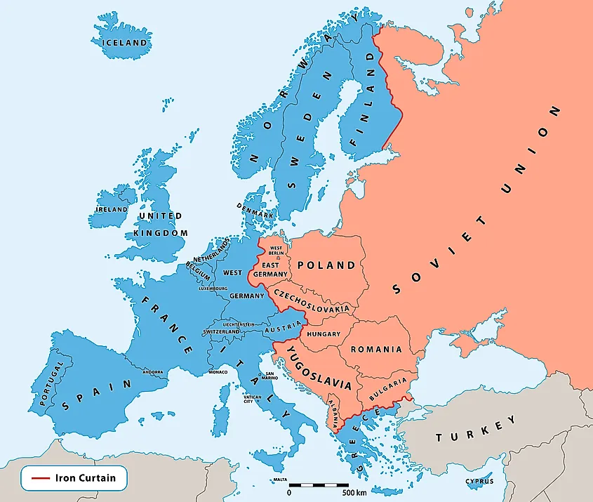
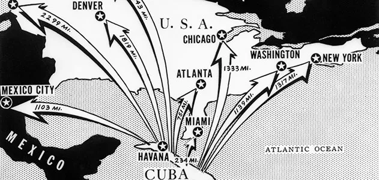
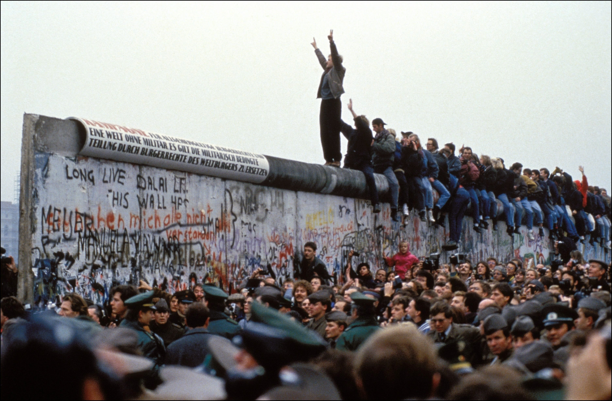

The Cold War was a prolonged period of geopolitical tension and rivalry that emerged primarily between the United States and the Soviet Union after World War II, lasting from the late 1940s until the early 1990s. It was characterized by a lack of direct military confrontation between the two superpowers but involved a wide array of indirect conflicts, ideological battles, and strategic maneuvers that shaped global politics during the second half of the 20th century. The Cold War was not a traditional war; instead, it manifested through various means, including political propaganda, economic sanctions, espionage, arms races, and proxy wars fought in different regions around the world. Central to the conflict were the opposing ideologies of capitalism, championed by the United States, and communism, promoted by the Soviet Union. This ideological divide led to a series of political and military alliances, with both superpowers seeking to expand their influence globally, resulting in significant changes in international relations, domestic policies, and societal dynamics across numerous countries. The Cold War was also marked by significant events such as the Berlin Blockade (1948-1949), the Cuban Missile Crisis (1962), and the Vietnam War (1955-1975). The Berlin Blockade represented the first major crisis of the Cold War, where the Soviet Union attempted to cut off access to West Berlin in response to the introduction of a new currency in West Germany. In retaliation, the United States and its allies organized the Berlin Airlift, supplying West Berlin with essential goods, thereby demonstrating the lengths to which the West would go to oppose Soviet expansion. The Cuban Missile Crisis was perhaps the most perilous moment of the Cold War, bringing the two superpowers to the brink of nuclear war as the U.S. discovered Soviet missiles in Cuba, just 90 miles from its shores. The resolution of this crisis highlighted the delicate balance of power and the urgent need for effective communication to prevent catastrophic conflict. The Cold War ultimately concluded with the dissolution of the Soviet Union in 1991, marking a significant shift in global politics and the end of a prolonged era of rivalry.
One of the most illustrative examples of the Cold War is the Cuban Missile Crisis of October 1962, a 13-day confrontation between the United States and the Soviet Union that is widely regarded as the closest the world ever came to nuclear war. The crisis was triggered when the United States discovered that the Soviet Union was secretly installing nuclear missiles in Cuba, just 90 miles from Florida. This development was seen as an existential threat by the U.S., as it significantly shifted the strategic balance of power, allowing the Soviet Union to potentially strike major American cities within minutes. President John F. Kennedy responded to this provocation with a naval blockade (termed a "quarantine") around Cuba, demanding the removal of the missiles and publicly warning that any attack from Cuba would be met with a full retaliatory response against the Soviet Union. As tensions escalated, the world held its breath, anxiously anticipating the potential for nuclear confrontation. Both superpowers engaged in a high-stakes game of brinkmanship, where miscommunication could easily have led to catastrophic consequences. However, behind the scenes, diplomatic channels remained open. Ultimately, the crisis was resolved when the Soviet Union, led by Premier Nikita Khrushchev, agreed to dismantle the missile installations in Cuba in exchange for a U.S. promise not to invade the island and the secret removal of American missiles stationed in Turkey. The resolution of the Cuban Missile Crisis had profound implications for Cold War dynamics. It underscored the necessity for direct communication and the establishment of a hotline between Washington and Moscow to prevent future crises. Additionally, it spurred discussions around nuclear disarmament and arms control, leading to treaties such as the Nuclear Test Ban Treaty of 1963. The Cuban Missile Crisis remains a pivotal moment in Cold War history, illustrating the delicate balance of power and the potential consequences of ideological conflicts and military posturing in an increasingly nuclear world.
Why is it essential to learn Cold War?
One of the most compelling reasons to study the Cold War is its profound influence on contemporary global politics. The ideological, political, and military divisions that emerged during this period continue to shape international relations today. For instance, the Cold War established the framework for many of the conflicts and alliances that persist in various regions, such as the Middle East, Asia, and Eastern Europe. The remnants of Cold War ideologies can be observed in modern geopolitical rivalries, particularly between the United States and Russia, as well as the United States and China. Additionally, the Cold War gave rise to significant international organizations and agreements that still play crucial roles in global governance, such as the North Atlantic Treaty Organization (NATO) and the United Nations. Understanding the origins of these institutions helps to contextualize their current functions and challenges. Furthermore, the ideological struggles between capitalism and communism, and the impact of colonialism and post-colonialism, have shaped the political landscape in many developing nations, affecting issues such as governance, economic policies, and social movements. By studying the Cold War, we gain insight into how historical narratives, power dynamics, and ideological battles continue to influence today's world, providing a deeper understanding of current events and the complexities of international relations.
The Cold War era is rich with lessons on conflict resolution, diplomacy, and the potential consequences of militaristic approaches to international disputes. The period was marked by various high-stakes confrontations, including the Berlin Blockade, the Korean War, and the Cuban Missile Crisis, each highlighting the importance of negotiation, dialogue, and compromise in averting escalations into full-blown conflicts. For instance, the resolution of the Cuban Missile Crisis demonstrated that effective communication and diplomacy could defuse situations that appeared intractable and dangerous. By studying these historical events, learners can appreciate the significance of maintaining open lines of communication, the utility of back-channel negotiations, and the potential for mutual understanding, even between ideological opponents. The lessons learned during the Cold War continue to inform modern diplomatic strategies and conflict resolution efforts. In an era where global challenges such as terrorism, climate change, and nuclear proliferation persist, the insights gained from the Cold War can guide contemporary leaders in navigating complex international issues, emphasizing that diplomacy often holds more potential for peace than military confrontation.
Another vital reason to delve into the Cold War is its profound impact on societal values, cultural narratives, and the general psyche of nations involved in the conflict. The ideological battle between capitalism and communism shaped not only political policies but also influenced art, literature, education, and popular culture during this era. In the United States, anti-communist sentiments fueled the Red Scare, leading to widespread paranoia, censorship, and the suppression of dissenting voices. This period saw the rise of McCarthyism, where individuals were accused of communist affiliations often without substantial evidence, resulting in ruined lives and careers. Conversely, in the Soviet Union, the state promoted a culture that glorified communism and stifled individual expression. The regime exerted control over artistic and intellectual endeavors, leading to the suppression of dissent and the persecution of those who dared to challenge the prevailing ideology. By examining the Cold War’s societal and cultural dimensions, we gain insight into how ideologies can shape public consciousness, influence policies, and alter cultural landscapes. This understanding helps us reflect on the lasting implications of ideological divisions in today’s societies, where similar themes of polarization, censorship, and ideological conflicts can still be observed. Ultimately, studying the Cold War enriches our comprehension of the intricate relationship between ideology, culture, and society, illustrating the pervasive influence of political ideologies on the human experience.
Periods
The Early Years and the Formation of Alliances (1945-1949)
The Cold War officially began in the aftermath of World War II, a time when the Allied powers, particularly the United States and the Soviet Union, emerged as superpowers with differing ideologies. The ideological divide became evident as the wartime alliance began to fracture. In 1946, Winston Churchill delivered his famous "Iron Curtain" speech, highlighting the division of Europe into capitalist West and communist East. This period also saw the formation of various military and economic alliances as both superpowers sought to solidify their influence. In 1947, the U.S. adopted the Truman Doctrine, pledging to support nations resisting communist influence, which effectively marked the start of an active policy of containment against the Soviet Union. The Marshall Plan, introduced the same year, aimed to rebuild war-torn Europe and prevent the spread of communism by providing financial aid to Western European countries.
In response, the Soviet Union sought to strengthen its grip on Eastern Europe, establishing the Cominform (Communist Information Bureau) to coordinate communist activities across the continent. By 1949, the division of Europe was evident as the Western allies formed the North Atlantic Treaty Organization (NATO) in April, a collective defense alliance aimed at countering Soviet aggression. In October, the Soviet Union successfully tested its first atomic bomb, marking a significant shift in the balance of power and increasing tensions. These early years laid the groundwork for the prolonged conflict, as both superpowers began to perceive each other not just as rivals but as existential threats. The division of Europe into spheres of influence was now solidified, setting the stage for the subsequent confrontations and crises that would define the Cold War. More about Early Years of Cold War

Cr.: World Atlas
The Korean War and the Escalation of Tensions (1950-1953)
The Korean War (1950-1953) marked the first significant military engagement of the Cold War, illustrating the ideological conflict between communism and capitalism on a global scale. In June 1950, North Korea, backed by the Soviet Union and China, invaded South Korea, aiming to unify the peninsula under a communist regime. The United States quickly intervened, leading a United Nations coalition to support South Korea. This military action was framed within the context of the Truman Doctrine and the broader strategy of containment, reflecting the U.S. commitment to preventing the spread of communism.
The war was characterized by intense battles and significant loss of life, with the front line shifting frequently as both sides sought control over the peninsula. By late 1950, U.N. forces had pushed the North Koreans back to the Yalu River, only to face a massive counteroffensive from Chinese troops. The conflict ultimately reached a stalemate, resulting in an armistice in July 1953, which established the Korean Demilitarized Zone (DMZ) and left the Korean Peninsula divided. The Korean War not only entrenched the division of Korea but also solidified the U.S. commitment to containing communism globally, leading to military alliances and interventions in other regions. Furthermore, it heightened fears of communist expansion and led to the Red Scare in the United States, with intensified scrutiny of suspected communists and a greater emphasis on national security. More about Korean War
Cr.: PBS
The Cuban Missile Crisis and the Brink of Nuclear War (1962)
One of the most critical moments of the Cold War occurred in October 1962 with the Cuban Missile Crisis, a 13-day confrontation that brought the world to the brink of nuclear war. The crisis began when the United States discovered that the Soviet Union was installing nuclear missiles in Cuba, just 90 miles from the U.S. mainland. This development was viewed as an existential threat, prompting President John F. Kennedy to respond with a naval blockade around Cuba, termed a "quarantine," while demanding the removal of the missiles. The confrontation heightened tensions and led to fears of an imminent nuclear conflict.
Throughout the crisis, both superpowers engaged in a dangerous game of brinkmanship, with miscommunication posing the risk of escalation into war. Fortunately, behind-the-scenes diplomacy played a crucial role in resolving the situation. Ultimately, an agreement was reached in which the Soviet Union would dismantle its missile installations in Cuba in exchange for a U.S. promise not to invade the island and a secret commitment to remove American missiles from Turkey. The resolution of the Cuban Missile Crisis highlighted the critical need for direct communication between the superpowers, leading to the establishment of a direct hotline between Washington and Moscow. The crisis not only underscored the potential consequences of nuclear weapons but also demonstrated the necessity of diplomacy in resolving conflicts. The fallout from this event significantly shaped the future of U.S.-Soviet relations and marked a turning point in Cold War dynamics. More about The Cuban Missile Crisis

Cr.: Smithsonian Magazine
Détente and the Thawing of Relations (1969-1980)
Following the Cuban Missile Crisis, a period known as détente emerged in the late 1960s and lasted until the late 1970s, characterized by a relaxation of tensions between the United States and the Soviet Union. This era was marked by strategic arms limitation talks (SALT), which aimed to curtail the nuclear arms race and establish frameworks for arms control. In 1972, the SALT I agreement was signed, resulting in limitations on the deployment of ballistic missile systems and the Anti-Ballistic Missile Treaty, which sought to prevent the escalation of the arms race. This period also saw increased cultural and scientific exchanges between the two superpowers, symbolizing a shift towards cooperation in certain areas.
However, despite these efforts at improving relations, underlying tensions remained, particularly regarding the Soviet invasion of Afghanistan in 1979. The invasion was viewed as an aggressive expansion of Soviet influence in the Middle East, prompting the United States to respond by supporting Afghan resistance fighters, known as the Mujahideen. The Soviet intervention in Afghanistan marked a significant turning point, signaling the end of détente and leading to a resurgence of Cold War tensions. The response to this invasion included a boycott of the 1980 Moscow Olympics by several Western nations and increased military spending in the United States, marking a return to confrontational postures. Détente, while temporarily easing tensions, ultimately demonstrated that ideological divisions remained deeply entrenched, paving the way for renewed hostilities. More about Détente
Cr.: Britannica
The Fall of the Berlin Wall and the End of the Cold War (1989-1991)
The final phase of the Cold War was characterized by a wave of revolutions and the eventual collapse of communist regimes in Eastern Europe, culminating in the fall of the Berlin Wall in November 1989. The wall had stood as a potent symbol of the division between East and West since its construction in 1961, and its destruction marked a significant turning point in the Cold War narrative. The rise of reformist movements, such as Solidarity in Poland and the Velvet Revolution in Czechoslovakia, highlighted the growing discontent with authoritarian regimes and the demand for democratic governance and economic reform. These movements gained momentum in the late 1980s, fueled by Mikhail Gorbachev's policies of glasnost (openness) and perestroika (restructuring), which aimed to reform the Soviet economy and society but inadvertently weakened the hold of the Communist Party on power.
The fall of the Berlin Wall became a powerful symbol of the end of the Cold War, as it not only represented the collapse of Soviet influence in Eastern Europe but also signified the triumph of democratic ideals over authoritarianism. In 1990, East and West Germany were reunified, marking a significant moment in European history. By the end of 1991, the Soviet Union officially dissolved, leading to the independence of its republics and the end of a bipolar world order. The conclusion of the Cold War marked a profound shift in international relations, as the U.S. emerged as the sole superpower and a new era of globalization began. However, the legacy of the Cold War continues to resonate in contemporary geopolitics, reminding us of the enduring impact of ideological conflicts and the importance of diplomatic engagement in addressing global challenges. More about The Fall of the Berlin Wall

Cr.: CNN
Society
Economic Structure and Living Conditions
In the Eastern bloc, the economy was predominantly state-controlled, reflecting the principles of Marxist-Leninist ideology. This meant that most industries were nationalized, and the government dictated production, distribution, and pricing. The focus was on heavy industry and militarization, often at the expense of consumer goods. As a result, while some Eastern European countries achieved rapid industrial growth, the overall quality of life was lower than in the West. Shortages of consumer goods were common, and people often faced long queues for basic necessities. Despite these challenges, many Eastern bloc countries offered guaranteed employment, free education, and healthcare, which created a sense of social safety net and equality among the populace.
Conversely, the Western bloc operated under capitalist economies characterized by private ownership and market-driven policies. This system fostered innovation, entrepreneurship, and a greater variety of consumer goods. By the 1960s and 1970s, countries like the United States and West Germany experienced economic prosperity, with rising living standards and increased consumer choice. The post-war economic boom, particularly in Western Europe, enabled the development of a robust middle class, contributing to a sense of individualism and personal freedom. However, this economic prosperity was accompanied by social disparities and issues such as poverty and unemployment, which were more pronounced in some urban areas.
Political Ideologies and Civil Liberties
Politically, the Eastern bloc was characterized by authoritarian regimes that suppressed dissent and maintained strict control over civil liberties. Governments often used propaganda to promote communist ideology, and dissenters were frequently persecuted. The Communist Party was the sole political party, and any opposition was met with heavy-handed repression, including imprisonment and censorship. This created a society where fear and conformity were common, and many citizens felt disillusioned with the ideals of communism as the realities of their lives often contradicted the party’s narratives. Despite this oppression, underground movements and dissident groups emerged, advocating for political reform and greater freedoms, albeit at great personal risk.
In contrast, the Western bloc championed democratic values, promoting political pluralism and civil liberties. Freedom of speech, assembly, and the press were protected rights in many Western countries, allowing for vibrant political discourse and activism. While Western societies were not devoid of issues—such as racial discrimination in the United States and political corruption—they generally offered more opportunities for individual expression and civic participation. The presence of multiple political parties and the ability to challenge the status quo contributed to a sense of empowerment among citizens in the West. This ideological divide influenced cultural production as well, with Western media often portraying the East as oppressive, while Eastern media depicted the West as morally decadent.
Family and Gender Roles
Family structures and gender roles were heavily influenced by the prevailing ideologies in both the Eastern and Western blocs during the Cold War. In the Eastern bloc, the state promoted a model of the family that aligned with socialist ideals. Women were encouraged to join the workforce, with the government providing various incentives, such as maternity leave and childcare services. This emphasis on gender equality in the workplace was often contrasted with traditional views on family roles, leading to a complex interplay between state expectations and personal aspirations. However, despite these state-sponsored initiatives, women frequently faced a double burden, juggling professional responsibilities and domestic duties. The state also promoted the idea of the "New Soviet Woman," who was expected to contribute to both the economy and society while maintaining her role within the family.
Conversely, in the Western bloc, particularly in the United States and Western Europe, the post-war period initially reinforced traditional family roles, with a strong emphasis on homemaking for women and breadwinning for men. The ideal of the nuclear family became a cultural norm, celebrated in media and advertising. However, the 1960s and 1970s marked significant shifts as the feminist movement gained momentum, challenging traditional gender roles and advocating for women's rights in education, the workplace, and reproductive rights. Women increasingly entered higher education and the labor force, leading to debates about equality, work-life balance, and social expectations. This evolving landscape reflected broader social changes and questioned the foundations of family structures, creating a dynamic dialogue about gender roles in society. Overall, the Cold War era witnessed distinct approaches to family and gender, with the Eastern bloc promoting state-supported gender equality and the Western bloc grappling with traditional norms and the emergence of feminist movements.
Religion
During the Cold War, the role of religion varied significantly between the Eastern and Western blocs, reflecting the contrasting ideological frameworks of communism and capitalism. In the Eastern bloc, particularly in the Soviet Union, state atheism was officially promoted, and religious institutions were often viewed with suspicion as potential rivals to the communist ideology. The government actively sought to diminish the influence of religion on society, leading to widespread persecution of religious leaders and believers. Churches were closed, religious education was banned, and many religious practices were stigmatized. The state-sponsored narrative depicted religion as an "opiate of the masses," and efforts were made to promote secularism and materialism as foundational principles of society. Despite this oppression, various religious groups persisted, often meeting in secret or engaging in underground practices. The Russian Orthodox Church, for instance, experienced a complicated relationship with the state; while it was sometimes co-opted for propaganda purposes, many believers continued to practice their faith discreetly.
In contrast, the Western bloc embraced religious diversity and the freedom of worship as fundamental rights. In countries like the United States, religion played a significant role in public life, with a multitude of faiths coexisting and often influencing social and political movements. The post-war era saw a surge in religious revivalism, particularly in the U.S., where evangelical movements flourished. The idea of America as a "city upon a hill" emphasized a moral duty rooted in religious conviction, and religious leaders often became prominent voices in social issues, advocating for civil rights and social justice. However, this freedom also had its challenges, as religious differences could lead to social tensions and debates, particularly surrounding issues like abortion, civil rights, and the separation of church and state. Overall, while the Eastern bloc sought to suppress religious expression, the Western bloc celebrated it as an integral aspect of personal identity and civic life.
Cultural Life and Social Dynamics
Culturally, the Eastern and Western blocs exhibited distinct identities shaped by their respective ideologies and experiences. In the Eastern bloc, culture was heavily influenced by the state, with artistic expression often being used as a tool for propaganda. Literature, film, and the arts were expected to align with communist ideals, celebrating the working class and the achievements of socialism. However, this led to the emergence of underground art movements and intellectual circles that sought to challenge state narratives, often employing allegory and subtext to convey dissenting views. Despite restrictions, many Eastern European artists and writers found ways to express their discontent and envision alternative futures, leading to a rich, albeit constrained, cultural landscape.
In the Western bloc, cultural expression was more diverse and reflective of a wider range of influences. The 1960s and 1970s saw the rise of counterculture movements, with art, music, and literature reflecting the spirit of rebellion and questioning authority. Movements advocating for civil rights, gender equality, and environmental issues flourished, contributing to a dynamic social landscape. Popular culture, including rock music, cinema, and television, thrived, offering a platform for social commentary and shaping public consciousness. The contrast between the two blocs was stark; while the East often prioritized collective values and ideological conformity, the West embraced individualism, consumerism, and a broader spectrum of cultural expressions.
Education and Intellectual Life
Education and intellectual life during the Cold War reflected the ideological divides between the Eastern and Western blocs, influencing curricula, academic freedom, and the role of intellectuals in society. In the Eastern bloc, education was heavily centralized and state-controlled, with a curriculum designed to promote communist ideology and loyalty to the state. Schools emphasized subjects like Marxist-Leninist theory, history that glorified the Soviet regime, and the importance of collective values. The government sought to produce citizens who were ideologically aligned with socialist principles, often limiting critical thought and dissenting viewpoints. Intellectuals faced restrictions, and many were persecuted or silenced for expressing ideas that contradicted state ideology. However, underground intellectual movements sometimes emerged, fostering alternative thought and critique of the regime, albeit at great personal risk.
In contrast, the Western bloc celebrated educational freedom and academic inquiry as essential components of democratic society. Universities served as arenas for debate and dissent, encouraging critical thinking and the exploration of diverse ideas. The rise of liberal arts education emphasized individual expression and creativity, fostering an environment where students could challenge prevailing norms. This period saw the emergence of significant social movements, including civil rights, anti-war protests, and feminist activism, often originating from university campuses. While there were debates about educational access and quality, particularly regarding racial and socioeconomic disparities, the Western education system promoted an ethos of progress and innovation. The competition between the two blocs also extended into scientific and technological domains, exemplified by initiatives like the Space Race, where education and research were crucial in achieving national prestige and demonstrating ideological superiority. Ultimately, the Cold War shaped distinct educational landscapes, with the Eastern bloc focusing on ideological conformity and the Western bloc prioritizing intellectual freedom and individualism.
Science & Philosophy
Science
The Cold War was not merely a political and military struggle; it was also a battleground for scientific advancements and technological competition. Both the Eastern bloc, led by the Soviet Union, and the Western bloc, spearheaded by the United States, engaged in a race to assert their ideological superiority through scientific innovation and discovery. This era witnessed significant advancements in various fields such as space exploration, nuclear technology, and medicine, all underpinned by the overarching goal of demonstrating the efficacy and benefits of their respective ideologies.
In the Eastern bloc, scientific endeavors were heavily influenced by state policies and the ideology of Marxism-Leninism, which emphasized the role of science in advancing socialist society. The Soviet Union made substantial investments in education and research, viewing scientific progress as integral to the development of a strong, self-sufficient nation. One of the most notable achievements of Soviet science during the Cold War was the launch of Sputnik 1 on October 4, 1957. As the first artificial satellite to orbit the Earth, Sputnik marked a monumental achievement in space exploration and showcased the Soviet Union’s scientific prowess. This event not only signified a significant technological milestone but also instigated widespread fear and anxiety in the United States, prompting a reevaluation of its own scientific capabilities.
The success of Sputnik ignited the space race, a critical aspect of Cold War competition. In response, the U.S. government increased funding for science and education, leading to the establishment of NASA in 1958 and the subsequent development of various space missions. The Soviet Union continued to build on its early successes in space exploration, launching the first human, Yuri Gagarin, into space aboard Vostok 1 in April 1961. Gagarin's flight was celebrated as a triumph of socialism, and it bolstered the Soviet narrative of superiority in technology and human achievement. In addition to space exploration, the Eastern bloc also emphasized advancements in nuclear technology, with Soviet scientists achieving significant developments in nuclear physics, which played a critical role in the arms race and geopolitical dynamics of the Cold War.
In contrast, the Western bloc, particularly the United States, approached science and technology with a strong emphasis on individualism and free-market principles. The U.S. government recognized the importance of scientific innovation not just for military purposes but also for maintaining its global leadership position. The successful launch of Explorer 1 in January 1958, shortly after the Sputnik launch, exemplified the rapid response of American scientists and engineers. Explorer 1 contributed to the discovery of the Van Allen radiation belts, showcasing the American commitment to scientific research and exploration. The launch was not merely a scientific achievement; it was a strategic maneuver to reassure the American public of its technological capabilities in the face of Soviet advancements.
Moreover, the U.S. government's investment in research and development during the Cold War facilitated groundbreaking discoveries across various scientific fields. The establishment of the National Aeronautics and Space Administration (NASA) in 1958 led to an ambitious series of space missions, including the Apollo program, which aimed to land humans on the Moon. The successful landing of Apollo 11 in July 1969, with astronauts Neil Armstrong and Buzz Aldrin, marked a watershed moment in human history, representing not only a triumph of American ingenuity but also a pivotal victory in the space race against the Soviet Union. The scientific advancements that arose from these programs had far-reaching implications, leading to developments in materials science, telecommunications, and computer technology, many of which became integral to everyday life and industry.
Despite the fierce competition between the two blocs, the Cold War era also saw some collaboration in the scientific community. Both the Eastern and Western blocs engaged in scientific research that transcended ideological divides, particularly in fields like medicine and environmental science. For instance, the World Health Organization (WHO), established in 1948, became a platform for international collaboration, with scientists from both blocs working together to combat global health issues such as polio and tuberculosis. During the 1970s, environmental concerns also emerged as a shared area of interest, leading to discussions around pollution and climate change, albeit under the constraints of political tensions.
However, it is essential to note that the overarching competitive ethos often overshadowed these collaborative efforts. Each bloc sought to leverage scientific discoveries to strengthen its ideological stance and demonstrate the superiority of its system. For instance, while both sides made strides in medical research, the Eastern bloc emphasized the role of the state in providing healthcare and advancing public health, while the Western bloc focused on the individual and private sector contributions to medical innovation. This ideological framing often colored public perception and scientific discourse, leading to a complex interplay between competition and collaboration.
Philosophy
The Cold War era, spanning roughly from the end of World War II to the early 1990s, was marked not only by political and military tensions but also by significant philosophical debates and shifts. The ideological conflict between the Eastern bloc, led by the Soviet Union, and the Western bloc, led by the United States, was underpinned by contrasting philosophical foundations. In this period, philosophy served as a lens through which the competing ideologies of communism and capitalism were examined, critiqued, and propagated. Key philosophical movements, theories, and thinkers emerged as each bloc sought to justify its ideological stance, critique the other, and navigate the complexities of modern existence amidst geopolitical strife.
In the Eastern bloc, particularly within the Soviet Union, Marxism-Leninism served as the dominant philosophical framework that guided both governance and cultural discourse. This ideology, based on the works of Karl Marx and later developed by Vladimir Lenin, emphasized historical materialism, class struggle, and the necessity of a proletarian revolution to dismantle capitalism. The Soviet regime promoted the idea that philosophy should serve the state and its goals, leading to the establishment of a philosophical orthodoxy that aligned with Marxist-Leninist principles. Scholars and thinkers were often expected to produce works that reinforced the state's ideology, and any deviation from this orthodoxy was met with censorship and repression.
One prominent figure during this time was Georgi Plekhanov, often regarded as the "father of Russian Marxism." Plekhanov’s writings laid the groundwork for the application of Marxist theory in Russia, arguing for the importance of material conditions in shaping societal progress. His emphasis on the role of the working class in achieving a socialist society influenced many Soviet philosophers and politicians. Another notable philosopher, Mikhail Bakhtin, offered a different perspective by emphasizing dialogism and the multiplicity of voices within society. His works challenged the rigid doctrines of Marxism by highlighting the complexities of language and the importance of individual agency, although his ideas were not fully embraced during his time due to the prevailing political climate.
Furthermore, the Soviet Union’s philosophical discourse also delved into existentialism and phenomenology, albeit in a context that sought to reconcile these ideas with Marxist thought. Thinkers like Lev Shestov and Alexandr Zhdanov attempted to integrate existential questions into a Marxist framework, addressing the human condition amidst the constraints of totalitarianism. Their philosophical inquiries often revolved around themes of freedom, individuality, and the search for meaning, providing a counter-narrative to the dominant ideology that sought to suppress such inquiries. However, due to state censorship and repression, many existentialist ideas were marginalized, and philosophical discourse was largely confined within the parameters set by the regime.
Conversely, in the Western bloc, philosophy thrived in a context of intellectual freedom and pluralism, allowing for diverse schools of thought to emerge and flourish. The existentialist movement gained significant traction during the Cold War, with prominent figures such as Jean-Paul Sartre and Simone de Beauvoir exploring themes of individual freedom, responsibility, and the search for authenticity in an often-absurd world. Sartre’s seminal work, "Being and Nothingness" (1943), emphasized the idea that existence precedes essence, positing that individuals must create their own meaning in a world devoid of inherent purpose. This philosophy resonated deeply with a generation grappling with the anxieties and uncertainties of the Cold War, offering a framework for understanding personal agency in the face of societal pressures.
Moreover, the philosophy of American pragmatism emerged as a significant intellectual movement during this period, with thinkers like John Dewey and William James advocating for a practical approach to philosophy that emphasized the role of experience and action in shaping knowledge. Pragmatism stood in contrast to the rigid ideologies of the Cold War, promoting an understanding of truth as something dynamic and contingent upon context rather than absolute. This philosophical approach fostered a spirit of inquiry and dialogue, encouraging individuals to engage with the complexities of their social and political realities.
The Cold War also spurred a rise in political philosophy, as scholars sought to critically analyze and respond to the ideological conflict between capitalism and communism. Figures like Hannah Arendt and John Rawls contributed significantly to this discourse, examining the nature of power, justice, and the moral implications of political action. Arendt’s work, particularly "The Origins of Totalitarianism" (1951), explored the roots and consequences of totalitarian regimes, providing a profound critique of both Soviet communism and fascism. Meanwhile, Rawls’ "A Theory of Justice" (1971) introduced the idea of justice as fairness, proposing a framework for evaluating political structures based on principles of equality and mutual respect. These philosophical inquiries not only enriched the intellectual landscape of the Western bloc but also served as critical responses to the totalitarian tendencies observed in the Eastern bloc.
The philosophical developments of the Cold War were deeply intertwined with the political landscape, as each bloc sought to assert its ideological superiority through intellectual discourse. The Eastern bloc’s reliance on Marxist-Leninist philosophy aimed to legitimize the state’s authority and control over individuals, while simultaneously offering a vision of a just society rooted in collective well-being. Conversely, the Western bloc embraced a more pluralistic approach to philosophy, allowing for a range of ideas to coexist and compete in the marketplace of thought. This divergence in philosophical approaches reflected broader societal values, with the Eastern bloc prioritizing conformity to state ideology, while the Western bloc championed individualism and intellectual freedom.
Furthermore, the philosophical debates during this period were not confined to academic circles; they permeated popular culture, influencing literature, art, and social movements. The existentialist themes of authenticity and freedom resonated strongly with the countercultural movements of the 1960s, as young people in the West challenged traditional norms and sought alternative lifestyles. Similarly, philosophical discussions around justice and equality informed civil rights movements, advocating for the rights of marginalized groups in the face of systemic oppression. In contrast, the Eastern bloc’s philosophical discourse was often relegated to serving the interests of the state, leading to a stifling of creativity and dissenting voices within the intellectual community.
Key Lessons
The Dangers of Ideological Extremism
One of the most critical lessons from the Cold War is the peril of ideological extremism. Both the Soviet Union and the United States operated under rigid ideological frameworks—communism and capitalism, respectively—that not only defined their political and economic systems but also shaped their foreign policies and international relations. This ideological polarization led to an environment where compromise and dialogue were often sacrificed for the sake of ideological purity. The consequences of such extremism were evident in various global conflicts, proxy wars, and the division of nations, such as Korea and Vietnam, which suffered due to external ideological battles.
The Cold War also illustrated how ideological rigidity could lead to dehumanization and the justification of violence against perceived adversaries. The demonization of the "other" fostered an environment in which atrocities were committed in the name of ideology, from McCarthyism in the United States to the purges in the Soviet Union. The lessons drawn from this era emphasize the importance of promoting tolerance, understanding, and respect for differing viewpoints. Societies must strive to avoid falling into the traps of ideological fanaticism, recognizing that diverse perspectives can coexist and enrich human experience. Embracing pluralism and dialogue is essential for maintaining peace and preventing conflicts rooted in rigid ideological divisions.
The Importance of Diplomacy and Communication
The Cold War underscored the significance of diplomacy and communication in navigating international conflicts. Despite the intense rivalry between the superpowers, there were moments when dialogue prevailed over confrontation, demonstrating that open lines of communication can de-escalate tensions and foster understanding. The establishment of diplomatic channels, such as the Hotline Agreement in 1963, created direct communication links between Washington and Moscow, allowing leaders to avert misunderstandings and miscalculations that could lead to catastrophic consequences, particularly during crises like the Cuban Missile Crisis.
These instances of successful diplomacy highlight the necessity of dialogue in international relations, especially in times of crisis. In a globalized world where nations are interconnected, the lessons learned from the Cold War emphasize that proactive engagement and communication are crucial for addressing conflicts and misunderstandings. Collaborative frameworks and international institutions, such as the United Nations, emerged as platforms for dialogue and conflict resolution during this period, demonstrating the potential for cooperative approaches to address global challenges. Humanity must prioritize diplomatic solutions and establish robust communication channels to navigate contemporary geopolitical tensions effectively, avoiding the pitfalls of isolationism and hostility.
The Role of Propaganda in Shaping Public Perception
The Cold War illustrated the powerful role of propaganda in shaping public perception and influencing societal behavior. Both the United States and the Soviet Union utilized extensive propaganda campaigns to promote their ideologies and demonize the opposing side. These campaigns often manipulated information, employed fear tactics, and fostered stereotypes, creating a culture of mistrust and animosity between nations. The pervasive nature of propaganda during this era highlights how information can be weaponized to serve political ends, often at the expense of truth and ethical considerations.
This lesson serves as a cautionary tale for contemporary societies, particularly in the age of digital communication and social media, where misinformation can spread rapidly. The manipulation of information poses significant risks to democratic processes, social cohesion, and global stability. As a result, fostering media literacy and critical thinking skills is paramount for individuals and communities to discern fact from fiction. Societies must cultivate a culture of transparency, accountability, and ethical information dissemination to counteract the effects of propaganda and misinformation. Recognizing the importance of informed citizenry is vital for the health of democracies and for fostering constructive dialogue in an increasingly polarized world.
The Necessity of International Cooperation
Another significant lesson from the Cold War is the necessity of international cooperation in addressing global challenges. Despite the overarching tensions between the superpowers, the Cold War period also witnessed collaborative efforts to address shared concerns, such as nuclear proliferation, environmental issues, and public health. Treaties like the Nuclear Non-Proliferation Treaty (NPT), established in 1968, reflected a recognition of the need for collective action to prevent the spread of nuclear weapons and promote disarmament. Such agreements underscored the importance of nations working together to tackle existential threats that transcend national borders.
The COVID-19 pandemic serves as a contemporary reminder of the interconnectedness of global challenges, where no single nation can effectively combat such crises in isolation. The lessons from the Cold War highlight the urgency of fostering international cooperation and collaboration in addressing pressing issues such as climate change, health crises, and economic inequality. Global challenges require unified responses, and nations must prioritize multilateralism over unilateralism to achieve sustainable solutions. Investing in international partnerships and collaborative frameworks can enhance resilience and facilitate collective action to address shared challenges, ultimately promoting a more stable and prosperous world.
The Value of Human Rights and Dignity
The Cold War era brought human rights issues to the forefront, as both blocs sought to promote their ideological narratives by highlighting the perceived deficiencies of the other side. The Eastern bloc often criticized the Western capitalist system for its inequalities and injustices, while the West spotlighted human rights abuses in the Soviet Union and its satellite states. This competition highlighted the importance of human rights and individual dignity as universal values that transcend ideological divides. The lessons learned from this period emphasize the need to advocate for and protect human rights globally, recognizing that the dignity of every individual is fundamental to fostering peace and justice.
The Universal Declaration of Human Rights, adopted by the United Nations in 1948, emerged as a significant milestone during the Cold War, reflecting a collective commitment to uphold human rights standards. This document serves as a reminder that, regardless of political or ideological differences, the protection of human rights should be a priority for all nations. The struggles for civil rights, women’s rights, and decolonization during this era further demonstrated the power of grassroots movements in advocating for justice and equality. Humanity must remain vigilant in championing human rights and ensuring that the dignity of every individual is respected, as these principles are essential for fostering inclusive and equitable societies.
Facts about Cold War
While the Space Race is often discussed in terms of technological achievements, such as the launch of Sputnik by the Soviet Union and the Apollo moon landings by the United States, its implications extended far beyond science. The competition for space dominance was fundamentally tied to ideological superiority. Both superpowers viewed advancements in space exploration as a demonstration of their political and economic systems' superiority. For the Soviet Union, launching the first artificial satellite in 1957 was not just a scientific achievement; it was a propaganda victory showcasing the capabilities of communism. In contrast, the United States framed its own successes in space as a testament to the innovation and freedom fostered by capitalism. The Space Race not only spurred advancements in science and technology but also served as a powerful symbol of ideological competition that captivated the global imagination.
Espionage played a crucial role during the Cold War, shaping intelligence operations and foreign policy decisions. The covert activities of spies and intelligence agencies, such as the CIA in the United States and the KGB in the Soviet Union, often influenced significant events. One notable figure was Kim Philby, a British intelligence officer who was actually a double agent for the Soviet Union. His infiltration of British intelligence provided the USSR with invaluable information and highlighted the complexities of loyalty and betrayal during this era. The extensive espionage network not only created mistrust between nations but also had profound impacts on military strategies, political negotiations, and public perception. These clandestine operations underscore the lengths to which both sides went to gain an advantage, revealing the pervasive atmosphere of suspicion and paranoia that characterized the Cold War.
While much of the Cold War narrative focuses on military and political confrontations, cultural diplomacy played a significant role in shaping perceptions and relationships between the blocs. Initiatives like the Cultural Cold War saw both the United States and the Soviet Union using art, music, literature, and sports to promote their ideologies and showcase their cultural superiority. For instance, the United States sponsored jazz concerts and art exhibitions in Europe, emphasizing the creativity and freedom of American culture. The Soviet Union, on the other hand, organized international festivals and promoted socialist realism in literature and art to highlight the achievements of communism. These cultural exchanges not only aimed to win hearts and minds but also reflected the understanding that soft power could be as influential as military might in shaping global opinions and alliances.
The Cold War was often perceived as a binary conflict between two superpowers, but many nations sought to carve out their own paths through the Non-Aligned Movement (NAM). Established in the 1950s, the NAM represented countries that did not formally align with either the United States or the Soviet Union. Leaders such as Jawaharlal Nehru of India, Gamal Abdel Nasser of Egypt, and Josip Broz Tito of Yugoslavia sought to promote a third way that emphasized independence and cooperation among developing nations. The Non-Aligned Movement played a crucial role in advocating for decolonization and addressing issues of global inequality. Despite being overshadowed by the rivalry between the superpowers, the NAM’s efforts underscored the complexities of the Cold War and highlighted the aspirations of countries striving for autonomy and self-determination.
Psychological warfare was a critical component of Cold War strategy, often overshadowed by conventional military tactics. Both superpowers engaged in efforts to manipulate public opinion, spread propaganda, and instill fear among adversaries. One example is the "duck and cover" drills in American schools, which were intended to prepare children for the possibility of a nuclear attack. These drills not only reflected the anxieties of the time but also served as a means to normalize the threat of nuclear war in the public consciousness. On the other side, the Soviet Union employed psychological tactics to promote its narrative of capitalist exploitation and social injustice, further fueling tensions. The impact of psychological warfare during the Cold War extended beyond the battlefield, shaping societal attitudes and influencing public policy in both blocs.
Quiz
1. How did the Hubble Deep Field observation in 1995 change our understanding of the universe?
2. Describe one contribution of ancient Babylonians to early astronomy.
3. Explain the impact of the Islamic Golden Age on the development of astronomy during the medieval period.
4. How did the heliocentric model proposed by Copernicus revolutionize our understanding of the solar system?
5. What are some of the key research areas in contemporary astronomy, and why are they significant?